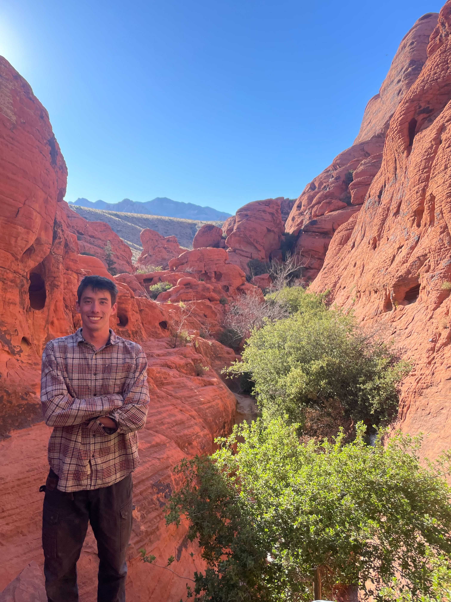

I am a biking guide.
- Name: Kenta Davis
- Location: San Francisco, CA
My name is Kenta! I am born in Japan and raised in Georgia before moving out to the bay area. When I first moved here, I really wanted to explore my new city on a bike but had no one to show me how. Now I offer this service to others just like me! I run SF Bike Guide as a solo operator with the goal of reducing the barrier to entry for new riders. Every plan is built around your pace, experience level, and what kind of day you want to have on the bike.
If you are new to Bay Area riding or just want a smoother experience on unfamiliar roads, I aim to make your ride safe, efficient, and genuinely enjoyable.

Inquiry
For guide reservations or any questions, please feel free to contact me at the email address or telephone number below.
dkenta12(at)gmail.com
706-767-0306